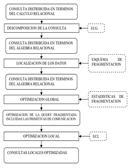

El procesamiento de consultas se puede descomponer en un número de subconsultas a los que corresponden cada uno de los niveles de un procesador de consultas genérico.
La entrada es una consulta sobre datos distribuidos que se expresa en términos del cálculo relacional. Por tanto, se refiere a relaciones globales, distribuidas en los nodos de forma transparente. Es necesario traducir la consulta distribuida en un número de operaciones locales, en cada BD local, que se optimizarán separadamente. Para ello se establecen cuatro niveles que se reparten de la siguiente manera:
• La descomposición de la consulta, la localización de los datos y la optimización global de la consulta se ejecutan en el nodo central y emplean información global.
• La optimización local de la consulta, tiene únicamente ámbito local, en cada nodo.

3.4.1 Descomposición de consultas globales
Este nivel tiene como objetivo simplificar la consulta y reescribirla en términos de álgebra relacional. La información necesaria para esta transformación se encuentra en la definición del ECG que describe las relaciones globales. La información sobre la distribución de los datos en el ECG no se usa hasta el siguiente nivel, de manera que las técnicas utilizadas son las mismas que en sistemas centralizados.
La descomposición puede verse como una secuencia de pasos sucesivos:
• Reescritura de la consulta en la forma más conveniente para el tratamiento posterior. Normalmente implica la manipulación de los cuantificadores conforme a la prioridad establecida para cada operador relacional.
• La consulta es entonces analizada semánticamente para detectar errores y en tal caso rechazarla lo antes posible. Las técnicas actuales para detectar errores sólo alcanzan a un subconjunto de las expresiones del cálculo relacional y típicamente se basan en algún grafo que captura la semántica de la consulta.
• La consulta (correcta) es simplificada por eliminación de redundancia, lo cual es muy probable que suceda debido a las anteriores transformaciones.
• Finalmente, la consulta se expresa en términos del álgebra relacional. La calidad de la expresión resultante se mide en base al rendimiento esperado. Este es a menudo un proceso de refinamientos sucesivos.
3.4.2 Localización de datos
La entrada a este nivel es una consulta expresada en términos del álgebra relacional y sobre relaciones distribuidas. Esta expresión se transforma en una consulta fragmentada equivalente, expresada sobre fragmentos almacenados en diferentes nodos que a su vez puede ser nuevamente simplificada por la aplicación de las reglas del álgebra relacional. Lo principal es, por tanto, localizar los datos para la consulta a partir de la información relativa a la distribución de los mismos. Este nivel determina que fragmentos están implicados en la resolución de la consulta y la convierte así en una consulta fragmentada.
La fragmentación de la consulta tiene lugar en dos etapas que resultan de aplicar las reglas de fragmentación primero y entonces derivar un programa de localización que consiste en operaciones del álgebra relacional sobre los fragmentos. Estas etapas son:
• La consulta distribuida se traduce en una consulta fragmentada por sustitución de cada relación distribuida por el correspondiente fragmento. Este proceso corresponde a un programa denominado programa de materialización y que se ejecuta después del programa de localización.
• La consulta fragmentada es simplificada y reestructurada para producir otra consulta mejorada. Las reglas de simplificación pueden ser las mismas que en el nivel anterior y dan lugar a un procedimiento de refinamiento progresivo.
Bibliografia:
Martín, L. M. (2010). Diseño y Construcción de Bases de . Universidad Carlos III de Madrid .
Ortiz, P. A. (s.f.). TRANSACCIONES EN . Base de datos distribuidas (pág. 20). Universidad Autónoma Metropolitana.